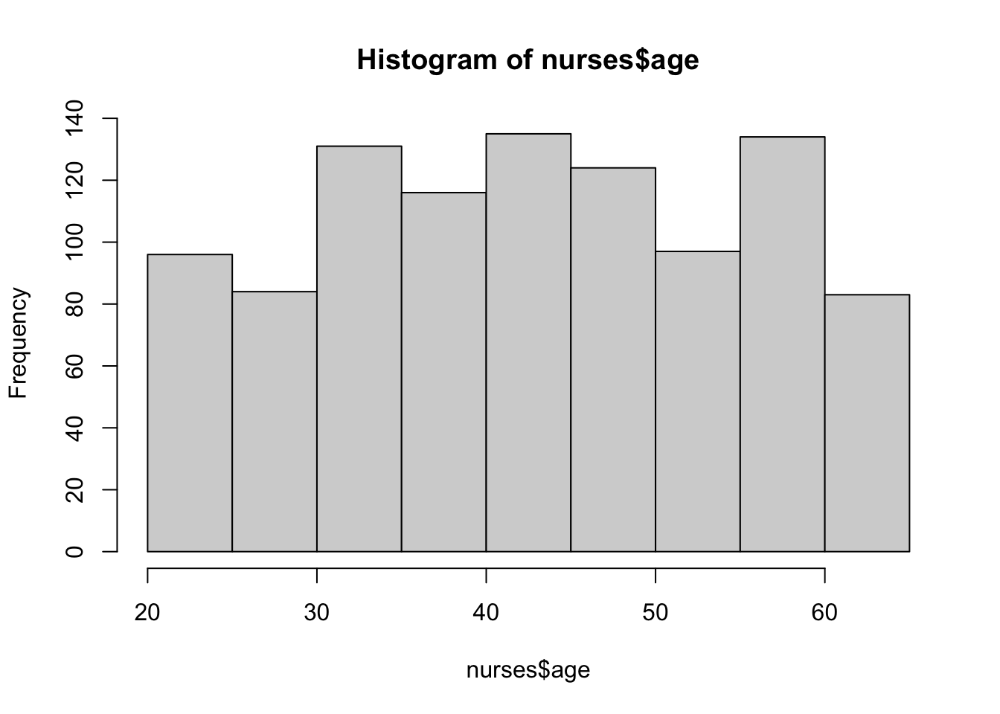
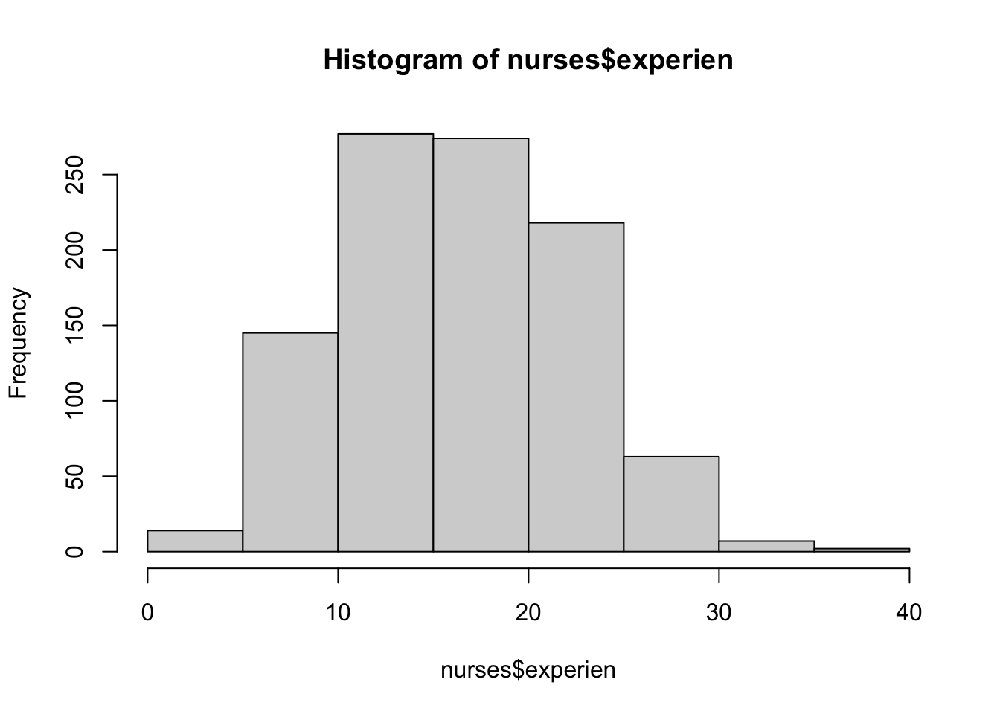
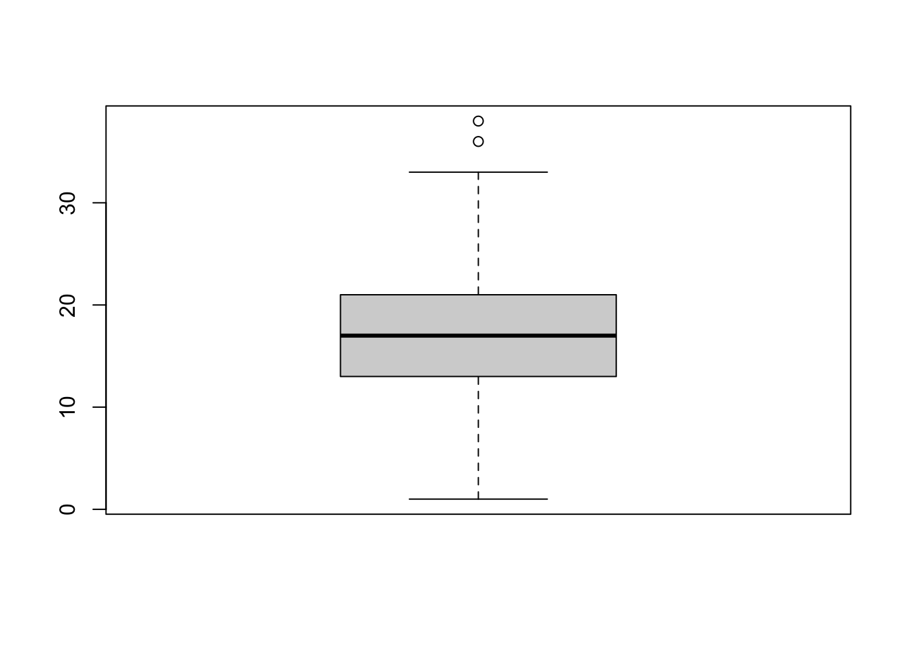
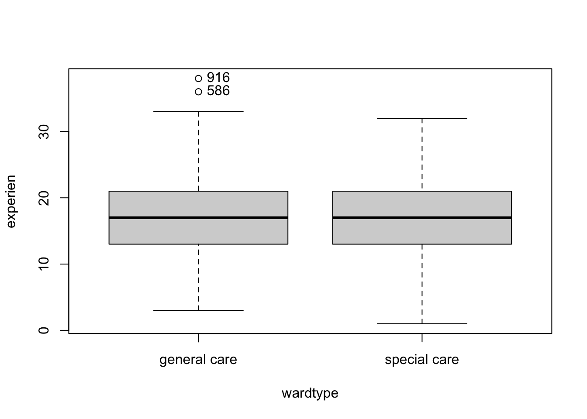
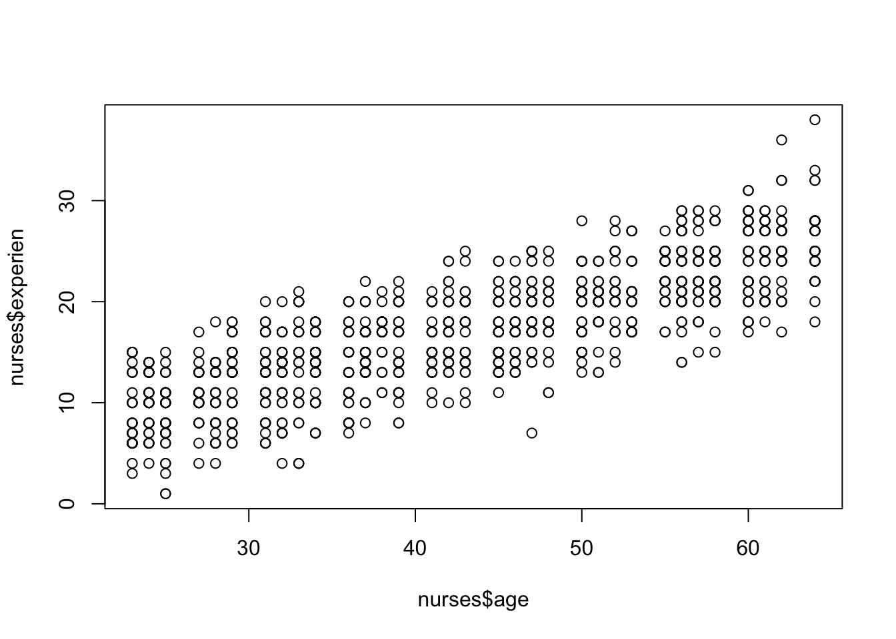

1 R Basics
This Chapter is designed to help you with a few things, not limited to:
- Overcome any fear about learning to code
- Learn about data structures in R
- Type data into R (not fun!)
- Import data to R from Excel and SPSS (fun)
- Manipulate data in R
- Reference different variables and subsets
- Add and delete columns in a data frame
- View the spreadsheet
- Using the
psychpackage for descriptive statistics - Using the
carpackage for exploratory visualization
1.1 What is “coding”
Computer programming, or coding is the use of a specific language to execute commands on a computer. The commands are usually called functions, though there’s more to it than that. A function is simply a mapping between some input and some output. It specifies a procedure for turning input into output.
For example, the sample mean is a function. The details are what the equation \(\frac{1}{N}\Sigma X\) says to do. This function has “arguments”, details to be passed to it and used. In this example, the arguments are N (the sample size) and the sum of the scores.
At it’s essence, R is a procedural language, meaning that programming in R is very literal, and involves writing out calls to various functions in order to obtain the output that you’d like to have. It also has “object-oriented” properties in the background. We don’t need to know about those, but they’re great since they make R very flexible as an open source tool. Open source means that anyone in the world can add functions or procedures to R by writing new code in R.
1.2 R Console versus the RStudio Script
In R, we have a choice of typing in commands at the console, which is just the command prompt or writing out many commands and statements in a file and running or executing some or all of them when we need them. The latter is basically the same as writing syntax in SPSS. Like syntax, R scripts can be written, saved, re-used, etc. In both cases, the idea is to be able to reconstruct your analysis exactly each time you re-do it. This saves time and energy, but also makes the analysis “reproducible” such that other scientists can check your work if they desire.
We will use the RStudio Script window to write and save our code. But let’s start with the console.
Type the following statements one by one in the console and see the output. You can actually copy each line one at a time and paste it in your console.
Press ENTER to have the console return results.
Note that any line that starts with # is not read by R. This is called a comment, or “commenting out” a line. These are handy in script files as they explain what is there to a person who doesn’t know what you were hoping to do (which is sometimes you!). It is good practice to include comments to describe what the code underneath does.
1.3 Working with data
So at this point we can see that R is a calculator. More elaborate computations can be performed using parentheses and built-in functions. Let’s try it, but now I want you to open up a new Script file. You can do that by clicking File > New File > R Script (or by various other short-cut methods).
The basic unit of data in R is a vector. Think of it like a row or column of data in Excel. Data objects aren’t very useful if we don’t save them to R’s Global Environment (this means the active datasets in R’s memory at any time).
We “assign” data to an object in R using the assignment operator <- . To type it you type the less than sign < then the short dash -. We put data in a vector by using the c() syntax. c is short for concatenate, a fancy word meaning string a bunch of stuff together.
When you assign data to an object (x below). It won’t print to the console. To see what’s in that object you can simply type it’s name at the console, or select the line in your script and click “Run.”
## [1] 1 2 3 41.4 Using a script to generate data, and computing the mean and standard deviation
Let’s say you’ve got 10 scores from different patients rating the quality of their care on a 5-item scale. The data are averages across the 5 items. A score of 5 means the patient was very satisfied.
Type in the following lines in your script window; you can omit the comments. When you are finished, click the button in your script window that says “Source.” This button sends all of your script to the console and runs it all. If instead you want to run one line at a time, highlight it with your cursor, or simply put your cursor at the beginning of the line and click the “Run” button. You can do this for the rest of the tutorial (that is, run each new line by itself rather than hitting source over and over again).
# make a small dataset
mydata <- c(3.0, 2.0, 5.0, 2.5, 3.5, 4.5, 2.0, 3.80, 1.0, 4.0)
# compute the mean using the sum of the scores divided by how many there are (the length of the vector holding them)
mymean <- sum(mydata) / length(mydata)
# compute sum of squares using similar commands note the parentheses!
mySS <- sum(mydata^2) - ((sum(mydata)^2) / length(mydata))
# compute the sample standard deviation by taking the square root of the sample variance
mysd <- sqrt(mySS / (length(mydata)- 1))Ok, you may be wondering where the output is. Look at the Environment tab in your RStudio pane. You’ll see a list of Values and the names you gave them along with the results. If you did it correctly you should have:
## [1] 3.0 2.0 5.0 2.5 3.5 4.5 2.0 3.8 1.0 4.0## [1] 3.13## [1] 14.221## [1] 1.257025Let’s compare our results with R’s built in functions
## [1] 3.13## [1] 1.257025Aha! We did it. As you can see, many things that you might be tempted to hard code are already functions or commands in R (those words are essentially interchangeable in R). We’ll see that this is true for many descriptive statistics in the next section. But first we need to start working with real data, and importing it into R.
1.5 Importing Data
The types of files that are likely to contain data you already have are .sav files (SPSS) and either .csv or .xlsx files. I’m grouping the latter 2 together although they’re actually quite different. To make things easier, I’m going to show you how to import .csv files only and also SPSS files. SAS files and Stata files can also be imported into R, which is good if you’re working with government survey data.
The best way to make sure the data file you’re importing is accessible is to make a folder on your computer, store the file in that folder, and then change the working directory to that folder
You can change your working directory manually using the Files nagivator pane in RStudio. Simply click on the file folders until you find the one with your file. Then, click the gear icon that says “More.” From that drop-down menu, click “Set as working directory.”

Figure 1.1: Set as working directory. Click the Gear icon to open this menu.
1.6 Reading in an SPSS file
First, you’ll need to download the nurses.sav file from Canvas. Save it to your Downloads folder if it doesn’t automatically go there. Then set that folder as your working directory (alternatively, you can choose whatever folder you want).
Here’s where it get’s a little tricky. To import SPSS data, we will use the “read.spss” command. That command asks you to give the full path to the file. On windows and PC it’s a bit different. I have a Mac so the following works for me. Before we run it, we have to load the add-on package that contains the command. It is called foreign. The following code loads the package (library(foreign)), then runs the command by specifying the path to the file in quotes. This assumes that you have already set the working directory to the folder that contains nurses.sav. Ignore any warnings about the package being built under any specific R build.
Importantly, there is an option (called an argument) that says to.data.frame = TRUE. This needs to be in any read.spss call because the default reads the data into a format that won’t work for us.
You can verify that your data was imported by looking at the Global Environment pane and clicking on the name of the dataset. It should pop up as a tab in RStudio and if you click on the tab you’ll see something that is very much like a spreadsheet. Also, you should see a blue circle with a little arrow back over by your dataset. It’s a quick way to view the columns in your data. Notice we have a NA at various places. This is R’s native missing data symbol and can be handled by various commands in various ways.
One more thing, let’s get some more details about our data before we analyze it. Try this
## 'data.frame': 1000 obs. of 20 variables:
## $ hospital : num 1 1 1 1 1 1 1 1 1 1 ...
## $ ward : num 1 1 1 1 1 1 1 1 1 2 ...
## $ wardid : num 11 11 11 11 11 11 11 11 11 12 ...
## $ nurse : num 1 2 3 4 5 6 7 8 9 10 ...
## $ age : num 36 45 32 57 46 60 23 32 60 45 ...
## $ gender : Factor w/ 2 levels "male","female": 1 1 1 2 2 2 2 2 1 1 ...
## $ experien : num 11 20 7 25 22 22 13 13 17 21 ...
## $ stress : num 7 7 7 6 6 6 6 7 7 6 ...
## $ wardtype : Factor w/ 2 levels "general care",..: 1 1 1 1 1 1 1 1 1 2 ...
## $ hospsize : Factor w/ 3 levels "small","medium",..: 3 3 3 3 3 3 3 3 3 3 ...
## $ expcon : Factor w/ 2 levels "control","experiment": 2 2 2 2 2 2 2 2 2 2 ...
## $ Zage : num -0.582 0.166 -0.914 1.162 0.249 ...
## $ Zgender : num -1.66 -1.66 -1.66 0.6 0.6 ...
## $ Zexperien: num -1.002 0.487 -1.664 1.315 0.818 ...
## $ Zstress : num 2.07 2.07 2.07 1.04 1.04 ...
## $ Zwardtype: num -1 -1 -1 -1 -1 ...
## $ Zhospsize: num 1.78 1.78 1.78 1.78 1.78 ...
## $ Zexpcon : num 0.992 0.992 0.992 0.992 0.992 ...
## $ Cexpcon : num 0.5 0.5 0.5 0.5 0.5 0.5 0.5 0.5 0.5 0.5 ...
## $ Chospsize: num 1 1 1 1 1 1 1 1 1 1 ...
## - attr(*, "variable.labels")= Named chr [1:20] "id" "id" "unique ward id" "id" ...
## ..- attr(*, "names")= chr [1:20] "hospital" "ward" "wardid" "nurse" ...
## - attr(*, "codepage")= int 65001What you’ve done here is basically print to the screen what you get with the toggle circle button. This is very helpful if you have factors labels (as with gender) which you will see are included with SPSS imports.
The nurses data set has a special type called data frame. This is basically R’s version of a spreadsheet. It has different columns for variables, and different rows for cases. Each column is of a specific type: num for numeric, char for character (text), Factor for coded variables, int for integer, and logi for logical (True / False).
1.6.1 A quick note on indexing
Another tricky part of R is that you have to tell R what column of a data frame you want to work with by referencing both the data name and the column. There are several ways to do this:
# using the $ selector
nurses$age
# using matrix indexing
nurses[ , 5]
# using the column name and matrix indexing
nurses[, "age"]1.6.1.1 Selection operator
The $ “selects” the age variable from nurses, and the result is a vector (the column of ages)
1.6.1.2 Matrix indexing
Matrix indexing is really handy, but also tricky. It is common to all computer code. A single cell of a matrix or rectangular data array is accessed using it’s row number and column number in square brackets separated by a comma. For example, this will give me the age of the nurse in the 6th row. Six specifies the row, while 5 is there singe age is the 5th column in the dataset
## [1] 60Usually however, we want a whole row or column. We do that simply by leaving either the row or column entry blank like so:
## [1] 36 45 32 57 46 60 23 32 60 45 57 47 32 42 42 53 60 33 64 37 23 61 58 52 28 52 43 64 47 62 39 46
## [33] 58 34 41 56 39 60 57 50 29 57 51 25 27 53 42 43 24 48 60 27 61 33 47 50 38 28 33 52 53 31 27 57
## [65] 47 41 64 45 42 25 34 36 55 33 51 60 24 31 58 60 29 24 24 46 43 24 45 64 25 55 42 58 64 47 25 50
## [97] 42 60 33 51 27 43 45 53 53 37 25 32 46 57 27 55 51 24 56 31 46 57 42 53 48 25 37 47 29 41 31 52
## [129] 36 39 62 42 51 29 25 50 23 60 43 43 27 28 36 60 64 64 61 27 32 28 64 55 46 45 23 55 60 39 24 61
## [161] 28 34 34 25 39 64 60 58 58 32 41 61 47 60 56 47 31 47 51 61 50 37 23 56 45 23 48 46 64 47 56 51
## [193] 28 61 41 37 25 25 50 64 38 39 43 28 33 39 46 25 52 45 52 33 25 36 50 57 43 53 62 60 62 33 33 27
## [225] 61 23 38 64 64 57 25 56 43 45 23 46 37 31 29 37 61 43 39 29 52 58 34 57 37 56 32 29 29 32 25 36
## [257] 45 58 52 42 31 37 47 31 38 58 31 41 62 62 24 28 58 56 50 51 24 28 43 45 61 45 41 31 32 24 57 41
## [289] 58 56 51 45 32 55 53 41 47 41 28 62 34 41 31 57 60 29 46 27 50 45 34 45 39 43 28 55 32 38 36 29
## [321] 48 31 37 58 31 46 60 46 57 50 64 24 37 36 58 64 34 47 43 39 43 27 27 55 61 37 36 32 47 27 42 55
## [353] 45 23 58 60 58 33 50 47 23 53 27 53 37 53 52 39 48 64 42 31 34 41 47 48 29 51 48 61 23 61 50 39
## [385] 37 47 24 47 23 36 41 55 56 37 39 24 56 60 42 29 39 61 37 24 31 36 47 64 47 31 55 34 29 42 42 56
## [417] 57 29 33 39 62 60 56 47 34 39 50 38 50 25 34 39 42 42 39 56 56 31 58 43 58 37 25 57 52 36 24 42
## [449] 60 56 55 31 32 42 32 32 57 61 41 46 51 31 56 42 45 39 46 36 42 41 37 52 42 57 62 32 56 48 33 34
## [481] 61 24 31 46 27 42 62 57 31 34 57 53 47 34 47 31 25 57 47 61 27 53 34 64 34 55 43 29 45 27 47 58
## [513] 45 64 55 32 29 29 48 45 43 23 60 39 45 36 45 36 42 37 41 64 58 62 32 33 25 60 38 48 45 56 46 45
## [545] 37 57 62 24 61 51 33 60 36 52 56 46 50 32 45 28 51 38 55 45 32 43 24 47 47 45 52 45 62 48 50 46
## [577] 61 58 51 33 24 60 43 57 33 62 61 47 60 27 24 31 55 53 23 25 27 45 52 25 37 50 41 28 50 52 23 28
## [609] 24 37 56 58 36 58 41 51 34 58 37 25 45 58 28 43 38 38 37 61 64 47 39 45 34 34 52 33 50 45 31 53
## [641] 28 50 58 39 42 28 43 64 47 29 56 23 28 43 60 62 34 36 51 53 58 57 23 23 36 39 33 45 50 34 64 31
## [673] 61 48 34 58 42 51 28 64 58 37 43 33 62 39 55 43 61 52 45 57 32 32 34 32 56 57 61 23 24 42 24 57
## [705] 27 51 58 29 42 43 32 51 47 62 61 47 37 23 27 55 25 43 52 25 50 50 58 34 43 46 42 51 46 25 29 48
## [737] 53 29 51 62 29 46 48 37 25 38 24 27 45 41 38 57 45 57 25 43 45 38 46 46 41 45 37 53 39 51 32 25
## [769] 23 41 55 24 55 50 62 46 48 53 56 46 56 29 36 31 53 52 47 56 25 56 61 64 41 56 37 36 41 25 62 27
## [801] 29 36 58 46 37 32 64 52 31 52 47 39 45 53 51 50 34 48 32 38 34 62 31 50 47 27 61 48 64 28 36 51
## [833] 55 31 28 33 38 45 28 38 46 57 42 31 37 57 42 42 60 33 48 24 37 37 28 34 33 50 31 29 61 58 48 25
## [865] 34 27 23 58 48 50 45 51 53 25 50 29 64 36 56 34 61 34 58 60 39 24 34 48 28 34 42 46 38 31 24 56
## [897] 23 50 27 60 23 25 24 37 56 42 39 29 64 50 36 46 56 31 56 64 47 32 41 41 34 37 48 62 38 24 25 36
## [929] 23 24 60 41 28 58 24 34 33 55 43 57 31 23 37 55 58 55 47 47 28 33 32 52 34 56 42 29 28 55 37 47
## [961] 48 31 25 47 51 34 62 39 46 38 36 25 42 36 32 42 36 51 52 31 25 41 29 23 23 38 28 62 45 60 34 41
## [993] 27 39 33 56 29 32 34 58## hospital ward wardid nurse age gender experien stress wardtype hospsize expcon Zage
## 6 1 1 11 6 60 female 22 6 general care large experiment 1.411358
## Zgender Zexperien Zstress Zwardtype Zhospsize Zexpcon Cexpcon Chospsize
## 6 0.600153 0.8180786 1.044405 -1.001501 1.777279 0.9915356 0.5 1If we want multiple rows or columns, we give a range or use a vector to name the columns: (note, I’m using the head command so that only 6 rows appear on the screen)
## age gender experien
## 1 36 male 11
## 2 45 male 20
## 3 32 male 7
## 4 57 female 25
## 5 46 female 22
## 6 60 female 22## age stress
## 1 36 7
## 2 45 7
## 3 32 7
## 4 57 6
## 5 46 6
## 6 60 6## age hospsize
## 1 36 large
## 2 45 large
## 3 32 large
## 4 57 large
## 5 46 large
## 6 60 large1.7 Frequencies and Contingency Tables
One of the most basic tasks of a statistician is to count stuff! Indeed, when we have categorical variables, that’s the only way we can summarize them. R has two basic functions for doing so, table and xtabs. Both can return counts of the number of cases in various categories, but xtabs is built specifically for cross-tabulation. They do not compute percentages, though. You need one more step that I’ll show you now.
##
## male female
## 265 735## gender
## male female
## 265 735## wardtype
## gender general care special care
## male 134 131
## female 365 370### Create a table and get proportions
gentab <- xtabs(~ gender + wardtype, data = nurses)
# cell percentages... joint probability
prop.table(gentab)## wardtype
## gender general care special care
## male 0.134 0.131
## female 0.365 0.370## wardtype
## gender general care special care
## male 0.5056604 0.4943396
## female 0.4965986 0.5034014## wardtype
## gender general care special care
## male 0.2685371 0.2614770
## female 0.7314629 0.73852301.8 Descriptive statistics
Like everything else, there are many options for summarizing a bunch of variables. Here we’ll check one out from the psych package. For more on this type ?psych in the console. Actually do it! If successful, you’ll see the help page for psych come up in one of your panes. In that window, click on describe it will be underlined in the 3rd line of the text.
1.8.1 The describe function
We’re going to use this function now. Note that in the “Usage” section of the help document, there’s lots of options for the describe function. They’re all default, so the only thing we need to do is simply specify what x is.
As with foreign the psych package needs to be loaded with the library() command. In practice, it’s best to put all of your library() commands at the top of your script and load them simultaneously. That’s because you only need to load a library / package one time per R session.
library(psych)
# use the describe function from psych on nurses
# name the columns you want
describe(nurses[ , c("age","experien","stress") ])## vars n mean sd median trimmed mad min max range skew kurtosis se
## age 1 1000 43.01 12.04 43 42.98 14.83 23 64 41 0.03 -1.18 0.38
## experien 2 1000 17.06 6.04 17 17.06 5.93 1 38 37 0.03 -0.39 0.19
## stress 3 1000 4.98 0.98 5 5.03 1.48 1 7 6 -0.45 0.25 0.03## vars n mean sd median trimmed mad min max range skew kurtosis se
## age 1 1000 43.01 12.04 43 42.98 14.83 23 64 41 0.03 -1.18 0.38
## experien 2 1000 17.06 6.04 17 17.06 5.93 1 38 37 0.03 -0.39 0.19
## stress 3 1000 4.98 0.98 5 5.03 1.48 1 7 6 -0.45 0.25 0.03## vars n mean sd median trimmed mad min max range skew kurtosis se
## age 1 1000 43.01 12.04 43 42.98 14.83 23 64 41 0.03 -1.18 0.38
## gender* 2 1000 1.73 0.44 2 1.79 0.00 1 2 1 -1.06 -0.87 0.01
## experien 3 1000 17.06 6.04 17 17.06 5.93 1 38 37 0.03 -0.39 0.19
## stress 4 1000 4.98 0.98 5 5.03 1.48 1 7 6 -0.45 0.25 0.03
## wardtype* 5 1000 1.50 0.50 2 1.50 0.00 1 2 1 0.00 -2.00 0.02
## hospsize* 6 1000 1.78 0.69 2 1.72 1.48 1 3 2 0.32 -0.90 0.02The column labels are pretty self explanatory, but your view in R studio may be different. For the most part, running something in the Script window will send output to the Console.
1.8.2 The describeBy function
Often we want to compute descriptive statistics for different groups. To do so, we use the describeBy function, also in the psych package. It works the same as describe but now we have to give it a grouping variable. We do this using the group argument. Don’t forget, you have to use the $ operator.
The grouping variable is converted to a factor, even if it is numeric. We can also analyze several variables per group at a time. Let’s look at age, experience, and stress by gender and then by ward type. Do you notice any differences between male and female nurses? They’re subtle, but one important one is the number of males and females.
##
## Descriptive statistics by group
## group: male
## vars n mean sd median trimmed mad min max range skew kurtosis se
## age 1 265 43.55 11.80 43 43.59 14.83 23 64 41 0.01 -1.14 0.72
## experien 2 265 17.49 6.19 17 17.44 5.93 4 38 34 0.15 -0.41 0.38
## stress 3 265 5.32 0.93 5 5.35 1.48 3 7 4 -0.34 0.01 0.06
## -----------------------------------------------------------------------------
## group: female
## vars n mean sd median trimmed mad min max range skew kurtosis se
## age 1 735 42.81 12.13 43 42.75 14.83 23 64 41 0.03 -1.20 0.45
## experien 2 735 16.90 5.98 17 16.91 5.93 1 36 35 -0.02 -0.42 0.22
## stress 3 735 4.85 0.97 5 4.92 1.48 1 7 6 -0.50 0.26 0.04Now let’s look across ward type (general care and special care). See any differences here?
## outcomes by ward type
describeBy(nurses[, c("age","experien","stress")], group = nurses$wardtype)##
## Descriptive statistics by group
## group: general care
## vars n mean sd median trimmed mad min max range skew kurtosis se
## age 1 499 42.99 12.28 42 42.97 14.83 23 64 41 0.05 -1.22 0.55
## experien 2 499 17.16 6.35 17 17.05 5.93 3 38 35 0.16 -0.42 0.28
## stress 3 499 4.94 1.05 5 4.99 1.48 1 7 6 -0.41 0.17 0.05
## -----------------------------------------------------------------------------
## group: special care
## vars n mean sd median trimmed mad min max range skew kurtosis se
## age 1 501 43.02 11.81 43 43.01 14.83 23 64 41 0.00 -1.14 0.53
## experien 2 501 16.95 5.73 17 17.07 5.93 1 32 31 -0.14 -0.46 0.26
## stress 3 501 5.02 0.91 5 5.08 1.48 2 7 5 -0.45 0.16 0.041.8.3 Computing a new variable and adding it to the dataframe
Finally, let’s see how to make a new variable and add it to the data frame. We do this by using the $ and naming a new variable on the fly. Here I’m going make a new composite variable which is just age times experience. I’m naming it composite but I can call it anything I want, as long as it’s not already a variable, it doesn’t begin with a number, and it has no spaces (underscores and periods are ok).
This data set also has Z scores for a number of variables. Let’s get fancy and see if we can re-make them by computing our own Z-scores for age. They should be the same as what’s there.
## Zage Zage2
## 1 -0.5817336 -0.5817336
## 2 0.1656757 0.1656757
## 3 -0.9139156 -0.9139156
## 4 1.1622216 1.1622216
## 5 0.2487212 0.2487212
## 6 1.4113581 1.4113581Notice the liberal use of parenthesis. R respects order of operations very literally, so when doing computations like this, it is important to check your work.
Here’s one more, a log transformation
1.9 Visualizing Data
One place where R really excels is with data visualization. We will only scratch the surface here. There is much more you can learn in Hadley Wickham’s book.
1.9.1 Histograms and density plots
For right now, we’ll use the base-R commands as well as similar ones from John Fox’s car package. Let’s first look at histograms for age, experience, and stress:



Now we’ll create density plots, which are smoothed histograms. This helps us infer the shape of the distribution, but can be misleading for discrete data. The cool thing here is that we can make plots for different groups. To do so, we’ll use the formula interface that’s common to more advanced R code. It uses the tilde ~.


1.9.2 Boxplots
Boxplots are useful for detecting outliers and comparing distributions that might have very different shapes. The box is the middle 50% of the data (stretching from the 25th percentile to the 75th), the “whiskers” extend out to the value that is 1.5 times the inter-quartile range, but sometimes to the min and max values. In the former situation, circles outside of the whiskers denote outliers. There is no single agreed upon definition of outlier, but the Boxplots here use Tukey’s definition, which is the one using the IQR.
Also, there is a base R version of boxplot, and Boxplot, a function from the car package that prints the rows containing the outliers (if any) to the console. Again, we use the formula interface to see boxplots for different groups



## [1] 586 916
## [1] "586" "916"1.9.3 Scatterplots
The last kind of visualization we often want is a scatterplot. Again, there are many options and we’ll look at two of them. R’s generic plot function is very flexible, but also requires a lot to make look good. That’s why there are many alternatives that we’ll see later in the course. Here, we’ll again contrast with one of the functions from the car package. Let’s see if age and experience are linearly related:
